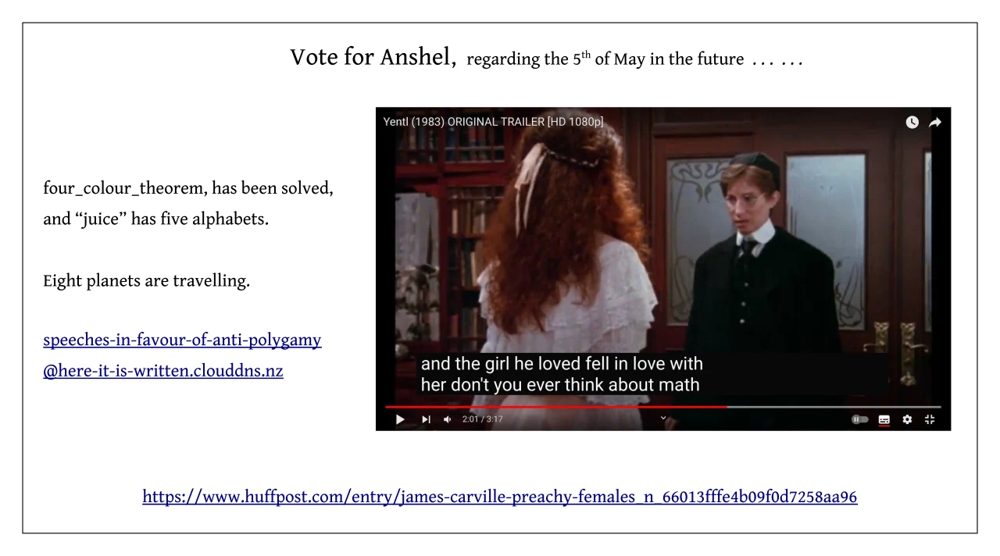
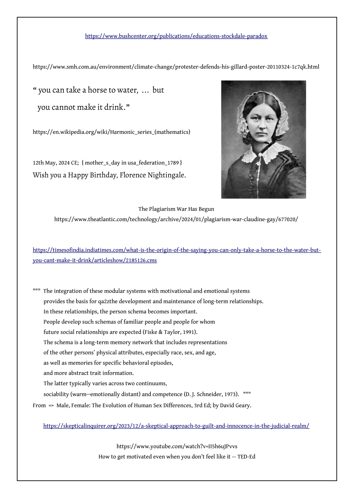
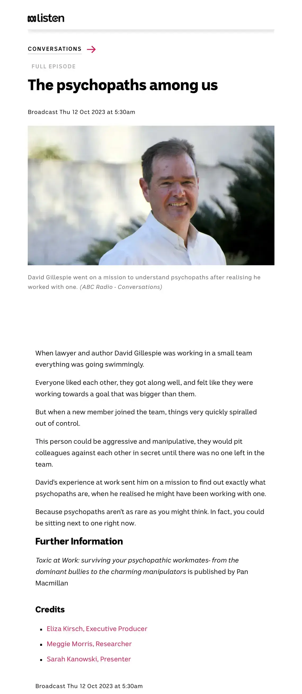

Speeches in favour of anti-polygamy
https://www.youtube.com/watch?v=vhhgI4tSMwc
Why 30 is not the new 20 | Meg Jay
https://www.youtube.com/watch?v=4q1_iQkppSs
Meg Jay: Essential questions to ask your future self | TED
https://www.youtube.com/watch?v=NcKLNP8x_QA
The Habit That Could Improve Your Career | Paul Catchlove | TED
https://www.youtube.com/watch?v=Wthc5hdzU1s
Anatomy of Love | Dr. Helen Fisher | Talks at Google
=======================================================
https://www.youtube.com/watch?v=9K_CZbu-UAU
Why we need to understand cults better | Sarah Edmondson | TEDxPortland
https://www.youtube.com/watch?v=e61YHcYqWyo
To stop abuse, we first need to understand grooming | Grace Tame | TEDxSydney
https://www.youtube.com/watch?v=HagAuIu1RkM
Lessons from a cult survivor about freedom | Claire Ashman | TEDxMelbourne
=======================================================
https://www.dss.gov.au/sexual-consent
https://www.dss.gov.au/sexual-consent/the-commonwealth-consent-policy-framework
https://www.dss.gov.au/sexual-consent/consent-and-healthy-sexual-relationships-program-checklist
https://www.dss.gov.au/sexual-consent/5-core-concepts-of-consent
https://www.dss.gov.au/sexual-consent/the-10-principles-at-a-glance
https://en.wikipedia.org/wiki/Travelling_salesman_problem
https://en.wikipedia.org/wiki/Collective_action_problem


